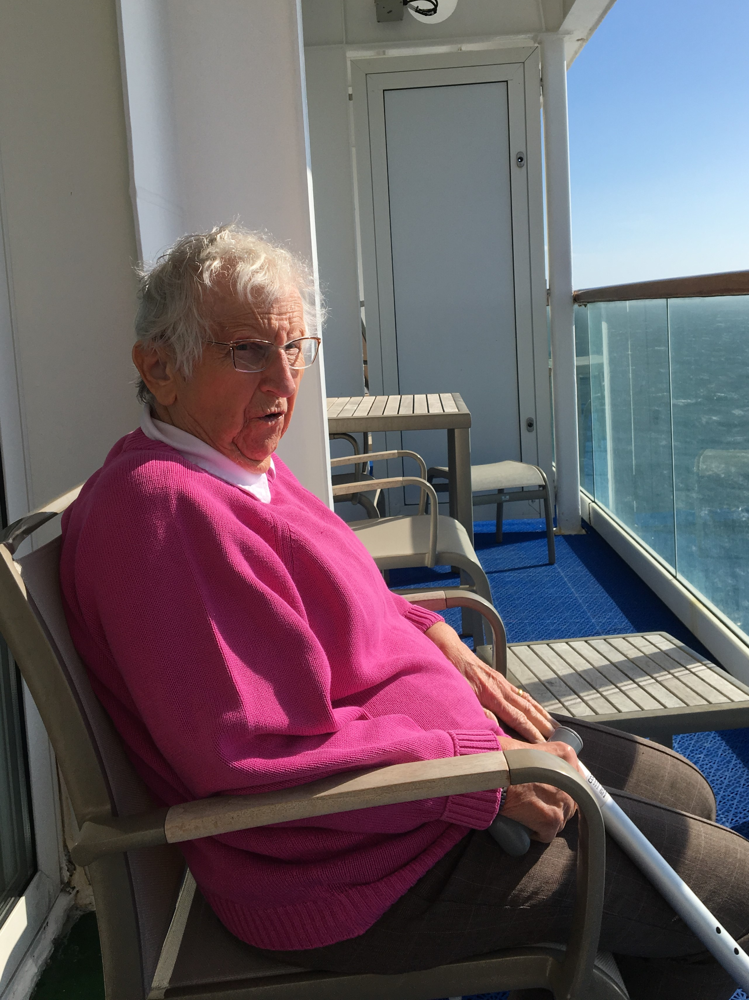

Norway Cruise 2017
Thurs June 8th 2017

Throughout the day Aurora continued heading south-south westerly through the North Sea on passage
through the North Sea oil and gas fields. The North Sea which is more than 600 miles long and 360 miles wide, has been the
centre for the commercial extraction of oil as far back as 1851, During the next century the UK continued to find rich sources
of oil with Germany, Denmark and the Netherlands followed suit.This led to the 1958 Continental shelf convention and the UK
Continental Shelf Act which came into force in May 1964, to try and settle any disputes on ownership of the oil.
It wasn't until 1969 however, that the Ekofisk Oil was discovered, and Norway became part of the oil and gas producers. As of
January 2015, The North Sea was the world's most active offshore drilling region with 173 active rigs drilling. Once through the
oil fields, Aurora entered the traffic routeing scheme once again, and in the evening passed Dover before altering her course
westerly towards the English Channel and the Isle of Wight.
Our final day at sea was spent in leisurely fashion. We could have gone to the Playhouse to listen to guest speaker Brian
Sneddon tell the fascinating story of Carl Faberge and the opulent world of Tsarist Saint Petersburg in the years before the
Russian revolution. We could have taken part in a Blackjack tournament. We could have gone to the Aurora's passenger choir's
concert or have a Salsa class with entertainment host Alejandro. We did none of the above, happy to enjoy each other's company
in our suite. Luckily our last evening was Casual wear so we could eat relaxed.
{kind=link}